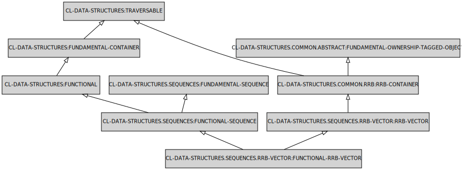
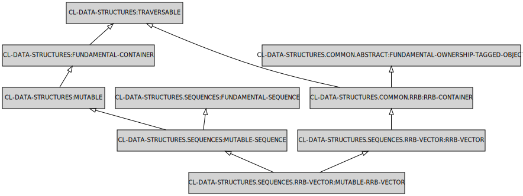
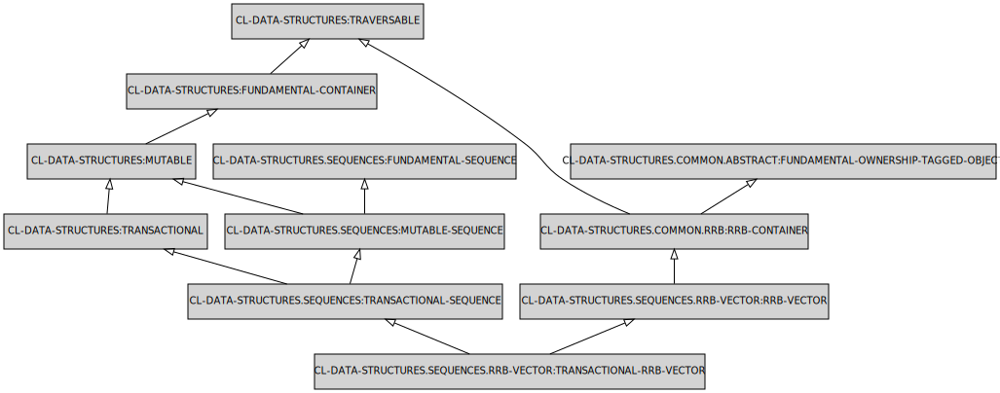

Sequence structures
Sequences are collections storing elements under numeric index, in consecutive numeric range starting from 0. Those semantics are very much like those of CL:SEQUENCE.
API
To obtain value under index use the AT function. To modify content of the sequence use the following function.
- PUT
- PUT!
- TAKE-OUT!
- TAKE-OUT!
RRB vector
RRB stands for "Relaxed Radix Trie". Elements are indexed using the successive 5 bit fragments of the index as the keys in the trees. This data structure is commonly seen in the new generation of functional languages (scala, clojure).
FUNCTIONAL-RRB-VECTOR

Description: Functional variant of the RRB vector.
MUTABLE-RRB-VECTOR

Description: Mutable variant of the RRB vector.
TRANSACTIONAL-RRB-VECTOR

Description: Transactional variant of the RRB vector.
MAKE-FUNCTIONAL-RRB-VECTOR
Lambda List:
(&REST ALL &KEY ELEMENT-TYPE)
Description:
Creates and returns a new instance of functiona-rrb-vector
MAKE-MUTABLE-RRB-VECTOR
Lambda List:
(&REST ALL &KEY ELEMENT-TYPE)
Description:
Creates and returns a new instance of mutable-rrb-vector.
MAKE-TRANSACTIONAL-RRB-VECTOR
Lambda List:
(&REST ALL &KEY ELEMENT-TYPE)
Description:
Creates and returns a new instance of transactional-rrb-vector